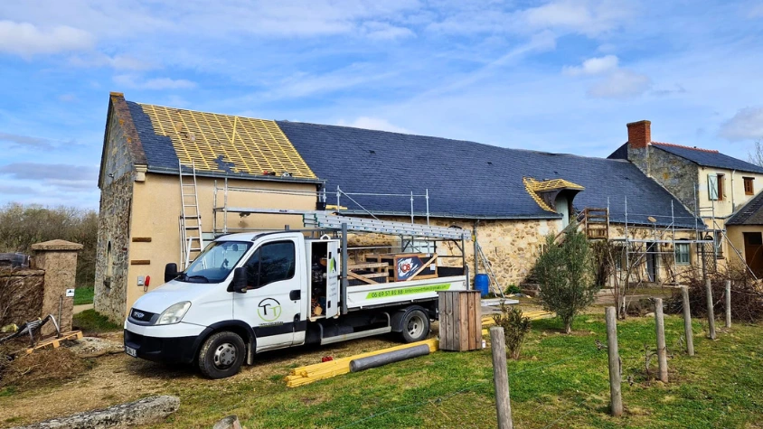
Travaux de Couverture
Rénovation complète, réparation et entretien de votre toiture. Tuiles, ardoises, zinc : tous matériaux.
En savoir plus →Depuis 14 ans, votre artisan couvreur de confiance à Saumur et dans tout le Maine-et-Loire. Rénovation toiture, zinguerie, Velux, isolation. Garantie décennale. Devis gratuit sous 24h.
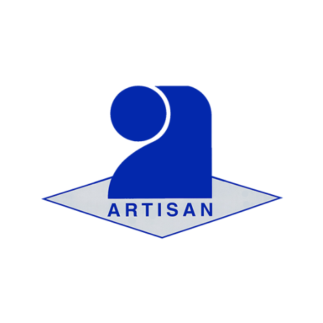
Réponse sous 24h garantie
Une gamme complète de prestations pour l'entretien, la rénovation et l'amélioration de votre habitat. Artisans qualifiés, intervention rapide dans tout le Maine-et-Loire.

Rénovation complète, réparation et entretien de votre toiture. Tuiles, ardoises, zinc : tous matériaux.
En savoir plus →Rénovation complète de A à Z : dépose, traitement charpente, pose des nouveaux matériaux et finitions soignées.
En savoir plus →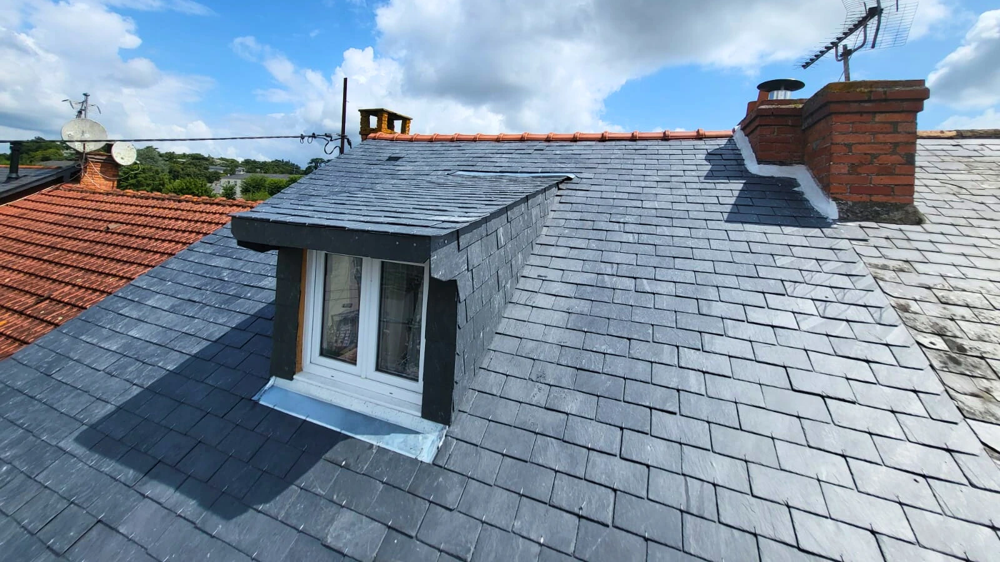
Installation et réparation de gouttières, chéneaux, abergements et couvertines en zinc, cuivre ou aluminium.
En savoir plus →Installation de fenêtres de toit avec pose soignée garantissant une étanchéité parfaite et une isolation optimale.
En savoir plus →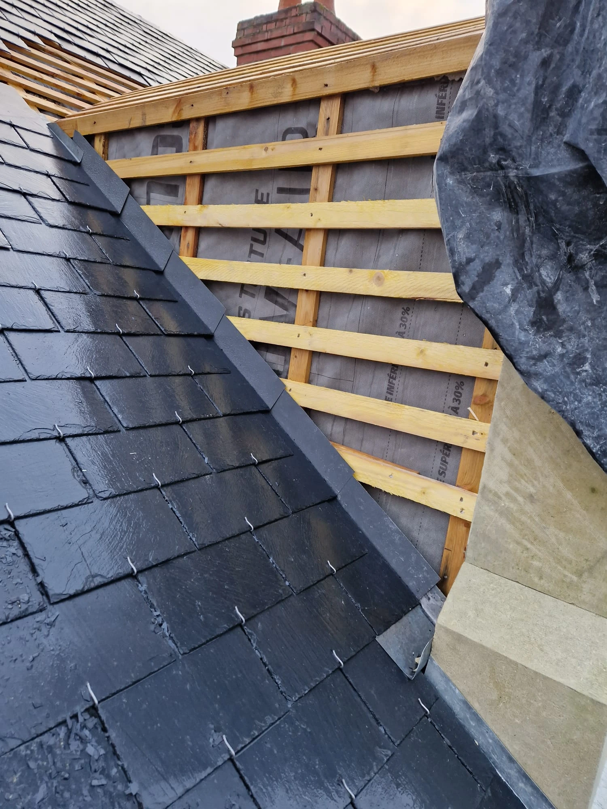
Isolez vos combles et réduisez vos factures de chauffage jusqu'à 30%. Certifié RGE, éligible MaPrimeRénov'.
En savoir plus →Fuite, tuiles arrachées, tempête... Notre équipe intervient 24h/24 et 7j/7 pour sécuriser votre toiture.
Appeler maintenant →Un parcours client simplifié pour vos travaux de couverture, de la prise de contact jusqu'à la livraison.
Appelez-nous ou remplissez le formulaire. Nous vous répondons sous 24h.
Nous nous déplaçons pour évaluer votre toiture et établir un devis précis.
Nos artisans qualifiés interviennent dans les délais convenus avec rigueur.
Réception du chantier et remise de la garantie décennale de 10 ans.
Depuis 14 ans, nous mettons notre expertise au service des particuliers et professionnels du Maine-et-Loire.
Une expertise reconnue dans tous les métiers de la couverture et de la zinguerie dans le Maine-et-Loire.
Tous nos travaux sont couverts par une assurance décennale de 10 ans pour votre tranquillité d'esprit.
Devis gratuit sous 24h et intervention d'urgence 7j/7 dans tout le Maine-et-Loire.
Des couvreurs certifiés RGE, formés aux dernières techniques et aux normes en vigueur.
Un aperçu de notre savoir-faire à travers nos derniers chantiers de couverture, zinguerie et façade.
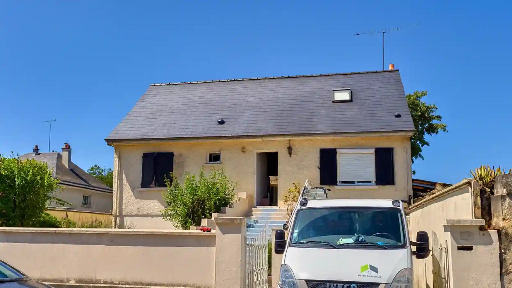
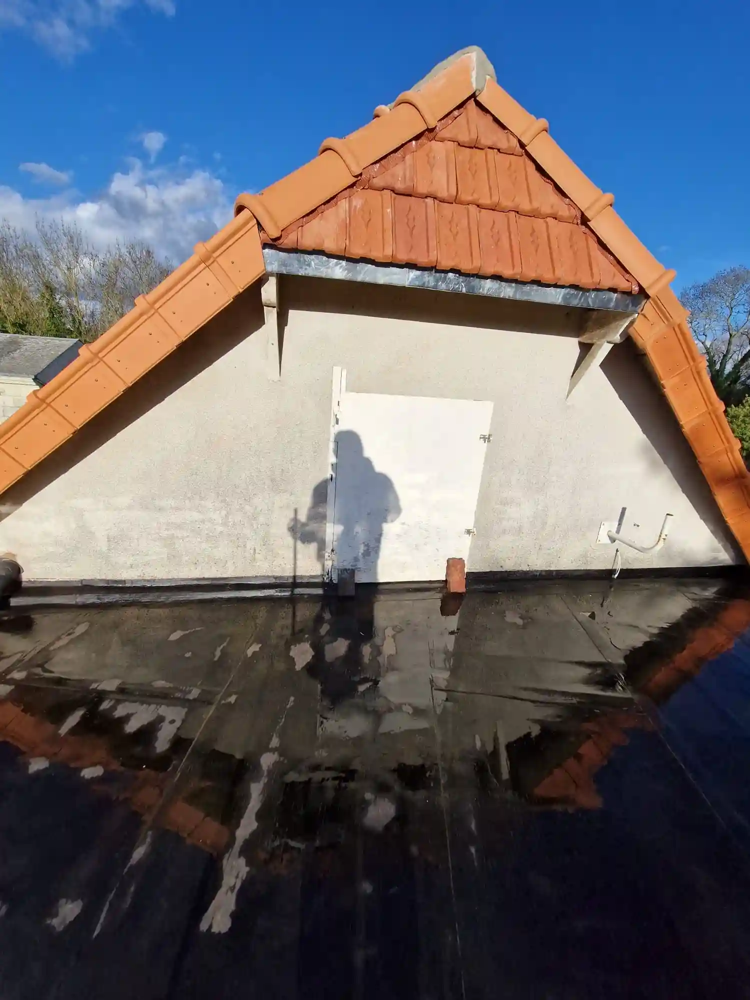
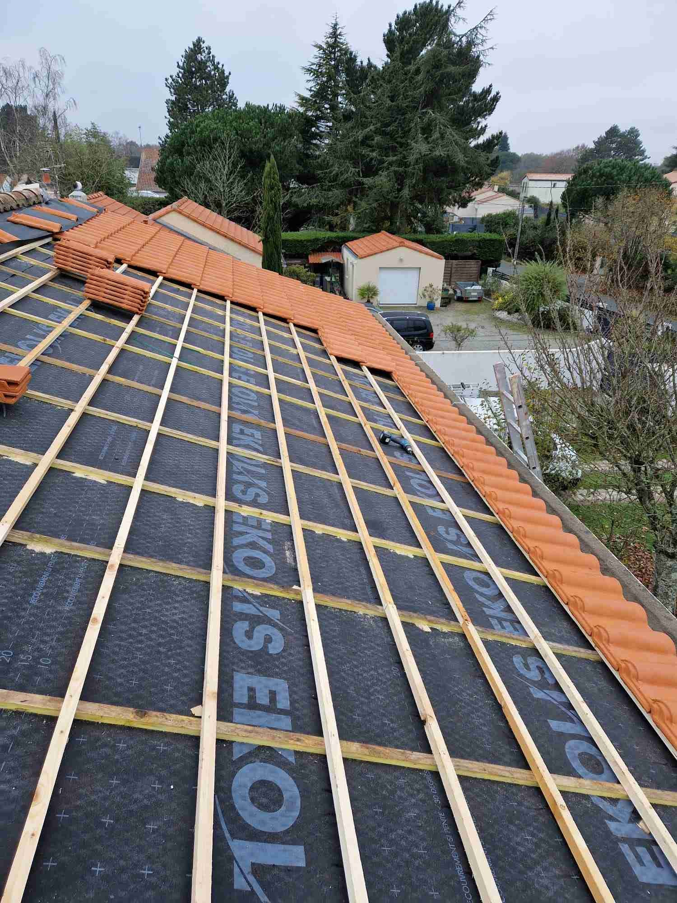
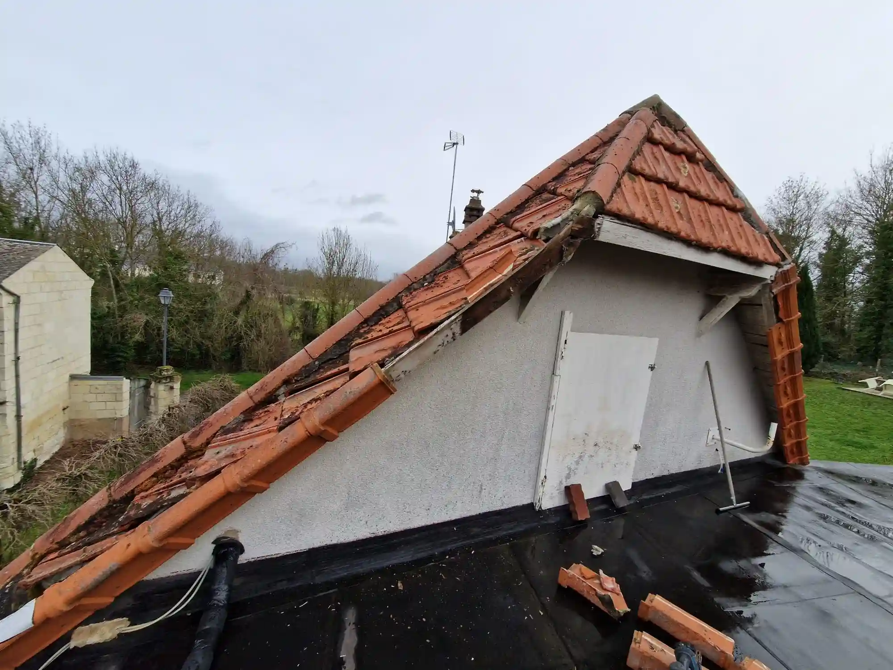
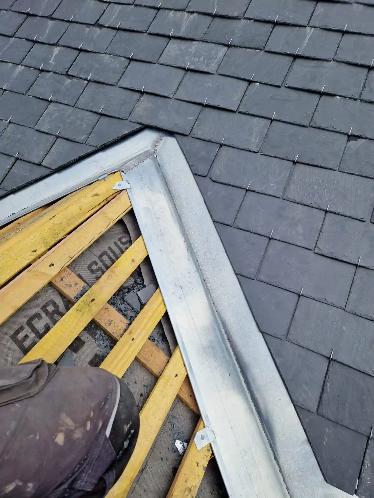
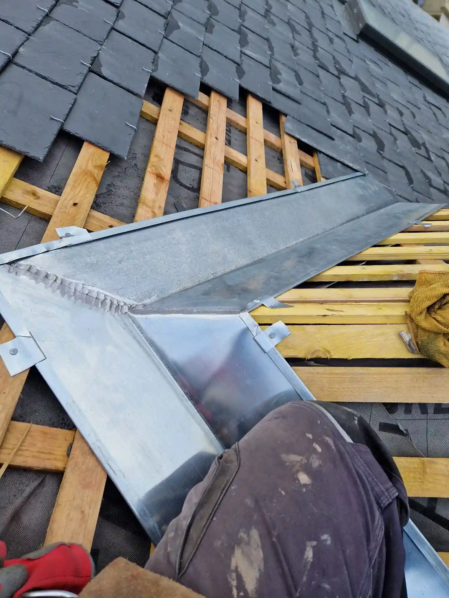
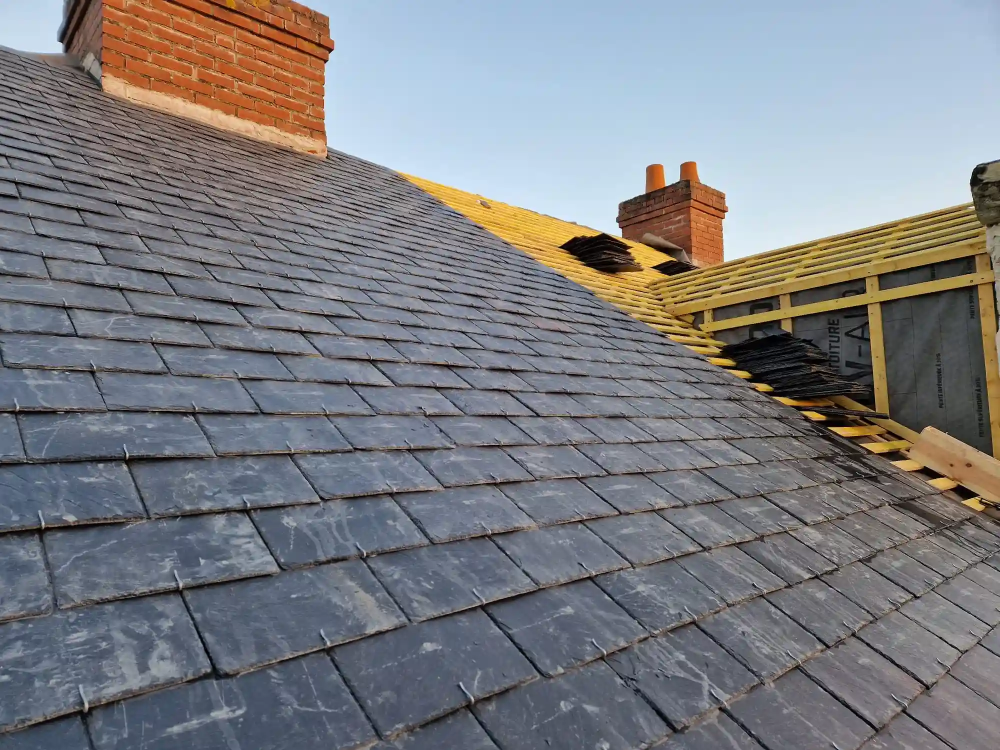
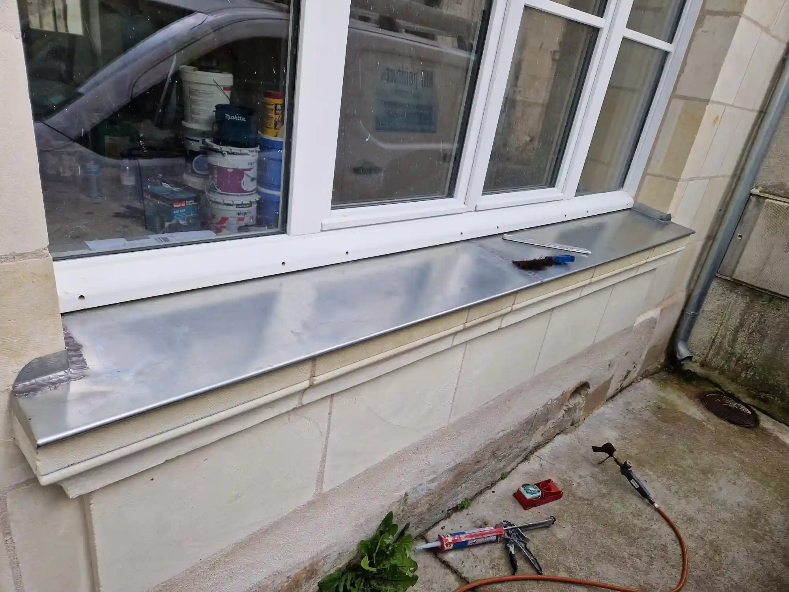
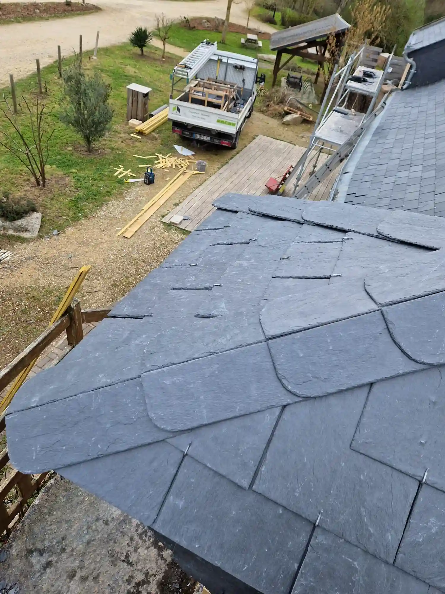
32 avis vérifiés sur Google · Note moyenne 5/5
★★★★★"Intervention rapide après une tempête. Équipe sérieuse, travail soigné, devis respecté. Je recommande vivement Tinten Couverture !"
★★★★★"Très professionnel, ponctuel et propre. La pose de Velux a été faite en une journée, sans aucune fuite. Parfait !"
★★★★★"Devis gratuit reçu en 24h, travaux réalisés dans les délais. Gouttières en zinc impeccables. Excellent rapport qualité-prix."
★★★★★"Urgence un dimanche soir, Tinten Couverture a répondu immédiatement et sécurisé la toiture. Merci pour votre réactivité !"
★★★★★"Isolation des combles réalisée avec soin. Économies sur la facture de chauffage visibles dès le premier hiver. Très satisfait."
★★★★★"Rénovation complète de la toiture en ardoise. Résultat magnifique, équipe à l'écoute et respectueuse de notre maison."
Basée à Saumur, notre équipe de couvreurs professionnels intervient rapidement dans toutes les communes du Maine-et-Loire et départements limitrophes. Que vous soyez à Angers, Cholet, ou dans les communes rurales, nous nous déplaçons pour tous vos projets de couverture.
Principales villes :
Et aussi :
Maine-et-Loire (49)
Zone d'intervention
Fuite, infiltration, tuiles envolées ? Notre équipe d'urgence intervient rapidement 7 jours sur 7 dans tout le Maine-et-Loire pour sécuriser votre toiture et limiter les dégâts. Diagnostic gratuit et devis immédiat sur place.
Retrouvez les réponses aux questions les plus courantes sur nos services de couverture et nos interventions.
Il est recommandé de rénover sa toiture lorsqu'elle a plus de 20-25 ans, lorsque vous constatez des infiltrations d'eau, des tuiles cassées ou manquantes, de la mousse importante, ou une dégradation visible de l'étanchéité. Un diagnostic gratuit par nos experts vous permettra d'évaluer l'état réel de votre toiture.
Un entretien tous les 3 à 5 ans est recommandé pour prolonger la durée de vie de votre toiture. Cela inclut le démoussage, le nettoyage des gouttières, la vérification des faîtages et la réparation des petits dommages avant qu'ils ne s'aggravent.
Oui, Tinten Couverture propose un service d'urgence 24h/24 et 7j/7. En cas de fuite, de tuiles envolées ou de dégâts causés par une tempête, notre équipe intervient rapidement pour sécuriser votre toiture et limiter les dégâts.
Oui, tous nos devis sont entièrement gratuits et sans engagement. Nous nous déplaçons à votre domicile pour évaluer vos besoins et vous proposer un devis détaillé et personnalisé sous 24h.
Tinten Couverture intervient dans tout le Maine-et-Loire (49) et les départements limitrophes. Notre siège est à Saumur, et nous couvrons notamment Angers, Cholet, Doué-en-Anjou, Montreuil-Bellay, Baugé-en-Anjou, Longué-Jumelles et toutes les communes rurales du département.
Oui, tous nos travaux sont couverts par la garantie décennale, qui vous protège pendant 10 ans contre les défauts de construction. Nous sommes également assurés en responsabilité civile professionnelle.
Contactez Tinten Couverture dès aujourd'hui pour un devis gratuit et personnalisé. Nos experts vous conseillent et vous accompagnent dans tous vos travaux de couverture.